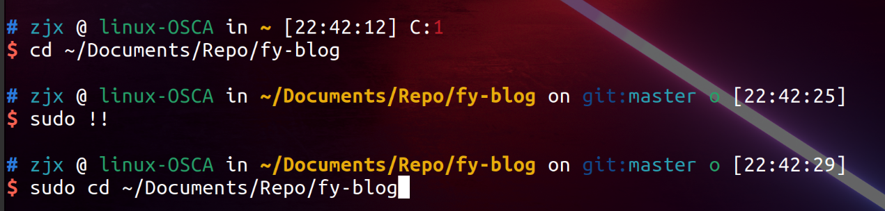
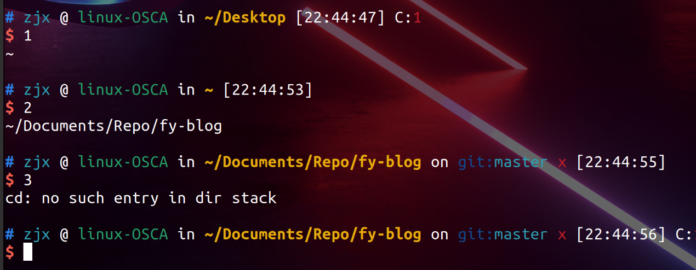

文章收获：
为什么要学习计算机系统基础:

- 该文章主要强调了作为计算机专业的我们在计算机方面的优势就是拥有对计算机系统的整体认知和把握，正是因为这一优势，我们可以在编程相同的命题时，可以编出与其他人效率相差几十倍的代码。
- 之后这篇文章也强调了动手实践的重要性，很多时候学习时的效果与动手实践时的效果可以说是两码事。同时通过动手实践可以促进自己对知识的理解和掌握，二者是相互促进的关系。
初识man
- 作为Linux菜鸟，经常面对着一大堆陌生的命令和参数，我经常会无语

- 这时我知道了可以找man帮忙，学会用man独立解决问题，于是我输入了
man man

- 进入了man的世界后，还是啥也不懂，于是按了h求寻求帮助（按q可以退出），这时我来到了新的世界，世界的起点是“SUMMARY OF LESS COMMANDS”,然后我按照初识man这篇文章的内容一步一步的在Linux中进行和学习

- 我明白了那个像英文音标一样的符号代表了ctrl，然后我也尝试了使用j 和 10j 来分别向下一行和十行。

- 使用j后

- 使用10j以后

- 然后开始使用搜索命令“/加你要搜索的关键词”

- 它会将所有含有h 和 H 的地方做出标记

- 然后在DESCRIPTION中了解到了manual分成9大类，每一个manual page属于都属于其中的某一类

- 然后是为了看懂SYNOPSIS，先在OPTIONS中弄明白每个参数的含义，然后你通过刚刚学会的"/加关键词"，学会了快速标记你想找的参数并搭配n来更快的找到。

- 我在OPTIONS中还是不太明白-k的意思，然后退出man并在命令行中输入:
man -k printf

- 查看printf（1）这个shell命令，输入：
man 1 printf

- 查看printf(3)这个库函数，输入:
man 3 printf

- 在掌握了man的用法后，我们应该经常来拜访ta，很多时候它可以为我们提供可靠的帮助：
- 通过这篇文章我们学会了：
- 1.阅读程序输出的提示
- 2.通过搜索来定位我关心的内容
- 3.动手实践是认识新事物的最好方法（一边看文章，一边动手学习）
- 4.要学会独立寻求帮助
git快速入门
1.git (具有存档功能）能够让你在过去和未来中随意穿梭, 避免构思错误的悲剧降临你的身上.
2.1安装命令：
apt-get install git
2.2安装后的配置命令（名字可以写自己的）：
1|git config --global user.name "Zhang San" # your name
2|git config --global user.email "zhangsan@foo.com" # your email
3|git config --global core.editor vim # your favourite editor
4|git config --global color.ui true
3.下载此次实验提供的框架代码：
git clone
如果想在别的实验/或者项目中使用git，应该先进行初始化：
git init
4.查看目前所有的存档：
git log
我的电脑展示：

可以看出我有一个存档的记录在昨天晚上的22：31：02时刻，标题为“my first using git and practicing times”，因为是第一次使用，所有把它简单的存为练习题目。第一次使用这个命令，内容应该为空。
5.查看所有跟踪已跟踪文件命令（已跟踪的文件是存档文件的前身）：
git status
查看是否有新的文件或已修改的文件未被跟踪, 若有, 则使用 git add 将文件加入跟踪列表, 例如
git add filename
想要一次性添加所有当前目录下的文件，你可以使用：
git add -A
但这样会出现弊端，它会将很多不必要的文件也进跟踪，第一个就是不需要使用的文件，第二个就是因为编译而产生的可执行的二进制文件（binary文件）编译后的binary文件其实是比较大的，要比源码大很多。其实只需要上传源代码即可。
6.gitignore这块有我的努力，有想知道它到底怎么用的，可以看一看
所以我仔细地查询了一下.gitignore（在这个文件里的文件名，会被跟踪忽略）的相关用法：
6.1.首先需要在你的工作区(项目的根目录)下建立一个名称为gitignore的文件，然后把想要忽略的文件名填进去，这样在git status和git add就会自动忽略在.gitignore中的文件名
命令1：
touch .gitignore 隐藏文件 .gitignore（linux下以.开头的文件都是隐藏文件）
6.2.然后用vim进行编辑：

可以看出我把名为1124.c的文件写入了其中，接下来就是见证.gitignore的效果的时刻：


可以看出我的1124.c文件被隐藏在了.gitignore中了.
其实.gitignore也有自己的语法可以在github上自己找也可以点击语法：
介绍一个常用的
# cat .gitignore
*.xml
*.log
*.apk
*.c
.gitignore注释用’#’, *表示匹配0个或多个任意字符，所以上面的模式就是要忽略所有的xml文件,log文件和apk文件。
.gitignore配置文件用于配置不需要加入版本管理的文件，配置好该文件可以为版本管理带来很大的便利。
7.存档：
7.1首先你需要使用 git status 查看是否有新的文件或已修改的文件未被跟踪, 若有, 则使用 git add 将文件加入跟踪列表
7.2然后使用命令:
git commit #将跟踪文件进行存档
8.读档：
首先使用 git log 来查看已有的存档, 并决定你需要回到哪个过去. 每一份存档都有一个hash code, 例如 b87c512d10348fd8f1e32ddea8ec95f87215aaa5 , 你需要通过hash code来告诉 git 你希望读哪一个档. 使用以下命令进行读档:
git reset --hard b87c
其中 b87c 是上文hash code的前缀: 你不需要输入整个hash code. 这时你再看看你的代码, 你已经成功地回到了过去!但事实上, 在使用 git reset 的hard模式之前, 你需要再三确认选择的存档是不是你的真正目标. 如果你读入了一个较早的存档, 那么比这个存档新的所有记录都将被删除! 这意为着你不能随便回到"将来"了.
9.git分支太烧脑了哈哈哈
使用git分支就可以在不同的时间节点之间来回随意穿梭，你可以以你存档的那个节点作为主分支，在此基础上不断开设新的分支，用来记录你在主分支基础上更新的内容，因为你可以在分支之间反复s横跳，所以你就可以来回穿梭于在主存档（主分支基础上）各个时间节点（分支）。
使用git branch来查看所有分支：

可以看到有俩个分支，一个是1224，一个master,前者是407a下的分支，后者是主分支。
现在使用git checkout 407a进行读档，这时我将处于一个虚构的分支中，我可以查看407a存档的内容，也可以对内容进行修改，但是无法存档，需要使用命令git checkout -B 分支名来将修改结果保存到一个新的分支中，如果分支已存在，起内容将会被覆盖。
00:04时刻我终于明白这玩意怎么使用了：
1.首先git checkout master进入了主分支（我的407a的主分支，你也可以使用git checkout 407a进入）
2.然后我在这个虚构分支中，再找一个文件进行内容修改，我在zjx空文件中写入zjx666并保存,这个保存是跟存档一样的，需要输入命令(这个十分重要，一开始我以为只要在不同的分支里进行修改，这些修改就会是相互独立的，实际却不是,它是共享修改结果的，为这个问题我想了很久很久，所以需要十分注意，一定要将各个分支的修改分别进行新的存档 存档 存储)：
1|git add zjx
2|git commit

然后我再创建一个新的分支：
git branch 1124c
看下图你会发现，当我使用命令git checkout 1124c进入别的分支后，甚至连zjx这个文件都没有，当我再使用命令git checkout master后，不仅有zjx里面还有内容zjx666。这说明了一个道理，各个分支直接相互独立，互不干涉，这样你就可以随时进入各个时间节点，就像平行时空一样！

MIT
课程概览与shell
1.动机
-
计算机可以帮助我们解决重复性的工作，但其实我们也在重复性的使用计算机。
-
我们在使用工具时，实际上可能只利用了这些工具的很少一部分，就比如我对
tmux的印象，一开始我以为它只是一个分屏工具，甚至我还觉得它没有screen好用,但当我真正好时间去学习如何使用它时，发现它是那么的好用，而且分屏也只是它的很小的卖点，它可以用来保留进程，还可以为同一个进程开多个窗口，同一个窗口可以开多个窗格。
2.课程结构
本课程包含 11 个时长在一小时左右的讲座，每一个讲座都会关注一个特定的主题或者工具。
3.主题1：The Shell
为了充分利用计算机的能力，我们不得不回到最根本的方式，使用文字接口：Shell,它允许你执行程序，输入并获取某种半结构化的输出。
4.使用shell
bash:
zjx@linux-OSCA:~$ #用户名为zjx@linux-OSCA 当前目录为~ $表示现在的身份不是root用户

-
执行了
date这个程序，不出意料地，它打印出了当前的日期和时间。然后，shell 等待我们输入其他命令。我们可以在执行命令的同时向程序传递 参数 ： -
上例中，我们让 shell 执行 echo ，同时指定参数 hello。
- 但是，shell 是如何知道去哪里寻找
date或echo的呢？其实，类似于 Python 或 Ruby，shell 是一个编程环境，所以它具备变量、条件、循环和函数（下一课进行讲解）。当你在 shell 中执行命令时，您实际上是在执行一段 shell 可以解释执行的简短代码。如果你要求 shell 执行某个指令，但是该指令并不是 shell 所了解的编程关键字，那么它会去咨询 环境变量$PATH，它会列出当 shell 接到某条指令时，进行程序搜索的路径：

如果希望传递的参数中包含空格（例如一个名为 My Photos 的文件夹），您要么用使用单引号，双引号将其包裹起来，要么使用转义符号 \ 进行处理（My\ Photos）。
2024年 01月 03日 星期三 16:22:15 CST
哈哈，我突然搞懂了环境变量是个啥，一下子感觉都非常的简单。
export MYSLIDE_HOME=/home/zjx/Documents/Repo/ppt_markdown
-
export: 这是一个 shell 命令，用于设置或显示环境变量。在这里，它用于设置环境变量。
-
MYSLIDE_HOME: 这是环境变量的名称。 -
/home/zjx/Documents/Repo/ppt_markdown: 这是为环境变量MYSLIDE_HOME指定的值，即设置MYSLIDE_HOME的路径/home/zjx/Documents/Repo/ppt_markdown。
export MYSLIDE_HOME=/home/zjx/Documents/Repo/ppt_markdown
export MYSLIDE_SCRIPT=$MYSLIDE_HOME/scripts
alias pptopen="$MYSLIDE_SCRIPT/open.sh $1"
我知道了使用一个程序时，只需要输入它的绝对路径即可，我就想到了这个pptgen也是同样的道理,先利用MYSLIDE_SCRIPT环境变量提供路径，再执行shell脚本。
以 .sh 结尾的文件通常是 Shell 脚本文件。这种文件包含一系列 Shell 命令，可以由操作系统的命令解释器（例如 Bash、sh、zsh 等）执行。 Shell 脚本被用于自动化和批处理任务，其中包含一系列要在终端中执行的命令。 Shell 脚本文件中的命令按顺序执行，可以包括变量、条件语句、循环等结构，使其具有较强的编程能力。
Bash（Bourne Again SHell）和 Zsh（Z Shell）都是类Unix系统中的命令行解释器，也被称为shell。Shell是用户与操作系统内核之间的接口，它允许用户通过命令行或脚本与操作系统进行交互。
Shell的主要功能包括：
-
命令解释与执行： 用户可以通过Shell输入命令，Shell会解释并执行这些命令。
-
脚本编写： 用户可以编写Shell脚本，将一系列命令组织在一起以完成特定的任务。
-
环境控制： Shell可以设置和管理环境变量，影响系统和用户的行为。
-
文件操作： 用户可以使用Shell执行文件和目录的操作，如创建、删除、移动、复制等。
Bash是Unix和Linuz中最常用的默认Shell，而Zsh则是一个功能更丰富且用户友好的替代品。它们都支持命令行历史、自动补全、别名等功能，以提高用户在命令行环境中的效率和便利性。选择使用哪种Shell通常取决于个人偏好和需求。
学习shell的过程：
shell 中的路径是一组被分割的目录，在 Linux 和 macOS 上使用 / 分割，而在Windows上是 \。路径 / 代表的是系统的根目录，所有的文件夹都包括在这个路径之下，在Windows上每个盘都有一个根目录（例如： C:\）。 我们假设您在学习本课程时使用的是 Linux 文件系统。如果某个路径以 / 开头，那么它是一个 绝对路径，其他的都是 相对路径 。相对路径是指相对于当前工作目录的路径，当前工作目录可以使用 pwd 命令来获取。此外，切换目录需要使用 cd 命令。在路径中，. 表示的是当前目录，而 .. 表示上级目录：

在 shell 中，程序有两个主要的“流”：它们的输入流和输出流。 当程序尝试读取信息时，它们会从输入流中进行读取，当程序打印信息时，它们会将信息输出到输出流中。 通常，一个程序的输入输出流都是您的终端。也就是，您的键盘作为输入，显示器作为输出。 但是，我们也可以重定向这些流！
最简单的重定向是 < file 和 > file。这两个命令可以将程序的输入输出流分别重定向到文件：
还可以使用 >> 来向一个文件追加内容。使用管道（ pipes ），我们能够更好的利用文件重定向。 | 操作符允许我们将一个程序的输出和另外一个程序的输入连接起来：

还可以使用 >> 来向一个文件追加内容。使用管道（ pipes ），我们能够更好的利用文件重定向。 | 操作符允许我们将一个程序的输出和另外一个程序的输入连接起来：


$ sudo find -L /sys/class/backlight -maxdepth 2 -name '*brightness*'
/sys/class/backlight/thinkpad_screen/brightness
$ cd /sys/class/backlight/thinkpad_screen
$ sudo echo 3 > brightness
An error occurred while redirecting file 'brightness'
open: Permission denied
出乎意料的是，我们还是得到了一个错误信息。毕竟，我们已经使用了 sudo 命令！关于 shell，有件事我们必须要知道。|、>、和 < 是通过 shell 执行的，而不是被各个程序单独执行。 echo 等程序并不知道 | 的存在，它们只知道从自己的输入输出流中进行读写。 对于上面这种情况， shell (权限为您的当前用户) 在设置 sudo echo 前尝试打开 brightness 文件并写入，但是系统拒绝了 shell 的操作因为此时 shell 不是根用户。
明白这一点后，我们可以这样操作：
$ echo 3 | sudo tee brightness
Shell工具和脚本
在bash中为变量赋值的语法是foo=bar，访问变量中存储的数值，其语法为 $foo。 需要注意的是，foo = bar （使用空格隔开）是不能正确工作的，因为解释器会调用程序foo 并将 = 和 bar作为参数。 总的来说，在shell脚本中使用空格会起到分割参数的作用，有时候可能会造成混淆，请务必多加检查。
Bash中的字符串通过' 和 "分隔符来定义，但是它们的含义并不相同。以'定义的字符串为原义字符串，其中的变量不会被转义，而 "定义的字符串会将变量值进行替换。

$0- 脚本名$1到$9- 脚本的参数。$1是第一个参数，依此类推。$@- 所有参数$#- 参数个数$?- 前一个命令的返回值$$- 当前脚本的进程识别码!!- 完整的上一条命令，包括参数。常见应用：当你因为权限不足执行命令失败时，可以使用sudo !!再尝试一次。$_- 上一条命令的最后一个参数。如果你正在使用的是交互式 shell，你可以通过按下Esc之后键入 . 来获取这个值。


命令通常使用 STDOUT来返回输出值，使用STDERR 来返回错误及错误码，便于脚本以更加友好的方式报告错误。 返回码或退出状态是脚本/命令之间交流执行状态的方式。返回值0表示正常执行，其他所有非0的返回值都表示有错误发生。
退出码可以搭配 &&（与操作符）和 ||（或操作符）使用，用来进行条件判断，决定是否执行其他程序。它们都属于短路运算符（short-circuiting） 同一行的多个命令可以用;分隔。程序 true 的返回码永远是0，false 的返回码永远是1。让我们看几个例子
另一个常见的模式是以变量的形式获取一个命令的输出，这可以通过 命令替换（command substitution）实现。
当通过 $( CMD ) 这样的方式来执行CMD 这个命令时，它的输出结果会替换掉 $( CMD ) 。例如，如果执行 for file in $(ls) ，shell首先将调用ls ，然后遍历得到的这些返回值。还有一个冷门的类似特性是 进程替换（process substitution）， <( CMD ) 会执行 CMD 并将结果输出到一个临时文件中，并将 <( CMD ) 替换成临时文件名。这在我们希望返回值通过文件而不是STDIN传递时很有用。例如， diff <(ls foo) <(ls bar) 会显示文件夹 foo 和 bar 中文件的区别。
说了很多，现在该看例子了，下面这个例子展示了一部分上面提到的特性。这段脚本会遍历我们提供的参数，使用grep 搜索字符串 foobar，如果没有找到，则将其作为注释追加到文件中。

在条件语句中，比较 $? 是否等于0。在bash中进行比较时，尽量使用双方括号 [[ ]] 而不是单方括号 [ ]，这样会降低犯错的几率，尽管这样并不能兼容 sh。
shell的 通配（*globbing*):
- 通配符 - 当你想要利用通配符进行匹配时，你可以分别使用
?和*来匹配一个或任意个字符。例如，对于文件foo,foo1,foo2,foo10和bar,rm foo?这条命令会删除foo1和foo2，而rm foo*则会删除除了bar之外的所有文件。 - 花括号
{}- 当你有一系列的指令，其中包含一段公共子串时，可以用花括号来自动展开这些命令。这在批量移动或转换文件时非常方便。
 在
在 shebang 行中使用env命令是一种好的实践，它会利用环境变量中的程序来解析该脚本，这样就提高来您的脚本的可移植性。env 会利用我们第一节讲座中介绍过的PATH 环境变量来进行定位。 例如，使用了env的shebang看上去时这样的#!/usr/bin/env python
env命令:
env是一个在Unix和类Unix系统中常见的命令，用于执行命令时设置环境变量。环境变量是一种在操作系统中存储配置信息的机制，它们对于控制程序的行为和设置运行时参数非常重要。
env命令的基本语法如下：
env [OPTION]... [-] [NAME=VALUE]... [COMMAND [ARG]...]
其中，NAME=VALUE是要设置的环境变量，COMMAND是要执行的命令，ARG是命令的参数。
例如，你可以使用env命令来设置环境变量并运行一个程序，如下所示：
env VAR1=value1 VAR2=value2 myprogram
这将使用env命令设置VAR1和VAR2环境变量的值，然后运行myprogram。这样做的好处是可以在不修改脚本或程序本身的情况下，通过命令行灵活地更改环境变量的值。
请注意，env命令也可以用于简化脚本的开头，以确保脚本在不同系统上的兼容性，因为它可以帮助找到系统中的正确解释器。例如，在脚本的开头使用#!/usr/bin/env python可以确保使用系统中安装的Python解释器运行脚本，而不是硬编码特定的解释器路径。
shell函数与脚本的区别：
- 函数只能与shell使用相同的语言，脚本可以使用任意语言。因此在脚本中包含
shebang是很重要的。 - 函数仅在定义时被加载，脚本会在每次被执行时加载。这让函数的加载比脚本略快一些，但每次修改函数定义，都要重新加载一次。
- 函数会在当前的shell环境中执行，脚本会在单独的进程中执行。因此，函数可以对环境变量进行更改，比如改变当前工作目录，脚本则不行。脚本需要使用
export将环境变量导出，并将值传递给环境变量。 - 与其他程序语言一样，函数可以提高代码模块性、代码复用性并创建清晰性的结构。shell脚本中往往也会包含它们自己的函数定义。
export命令用于将变量设置为环境变量，使其在当前会话中及其子进程中可用。以下是使用export命令的一些示例：

Shell工具
查看命令如何使用（使用这个命令行并找出它的不同的选项）：
- 可以使用-h或者--help
- 可以使用man,查看手册（manual）
查找文件
程序员们面对的最常见的重复任务就是查找文件或目录。所有的类UNIX系统都包含一个名为 find的工具，它是 shell 上用于查找文件的绝佳工具。find命令会递归地搜索符合条件的文件，例如：

查找代码
grep 有很多选项，这也使它成为一个非常全能的工具。其中我经常使用的有 -C ：获取查找结果的上下文（Context）；-v 将对结果进行反选（Invert），也就是输出不匹配的结果。举例来说， grep -C 5 会输出匹配结果前后五行。当需要搜索大量文件的时候，使用 -R 会递归地进入子目录并搜索所有的文本文件。
这里的rg指的是ripgrep，使用apt包是下载不了的，所以我今天第一次使用了新的安装包，就是为Mac专门服务的Homebrew.有了它我就能下百分之八十以上的应用了。

查找shell命令
history 命令允许您以程序员的方式来访问shell中输入的历史命令。这个命令会在标准输出中打印shell中的里面命令。如果我们要搜索历史记录，则可以利用管道将输出结果传递给 grep 进行模式搜索。 history | grep find 会打印包含find子串的命令。

可以修改 shell history 的行为，例如，如果在命令的开头加上一个空格，它就不会被加进shell记录中。当你输入包含密码或是其他敏感信息的命令时会用到这一特性。 为此你需要在.bashrc中添加HISTCONTROL=ignorespace或者向.zshrc 添加 setopt HIST_IGNORE_SPACE。 如果你不小心忘了在前面加空格，可以通过编辑。bash_history或 .zhistory 来手动地从历史记录中移除那一项。下面是我在bash和zsh进行的新的配置。


以下就是用Homebrew安装包下载工具的截图

文件夹导航
可以下载fasd工具或者autojump.
编辑器(vim)
vim的优点：
-
它对于插入文字和操纵文字有不同的模式。
-
Vim 是可编程的（可以使用
Vimscript即扩展vim的脚本语言 或者像 Python 一样的其他程序语言），Vim 的接口本身也是一个程序语言：键入操作（以及其助记名） 是命令，这些命令也是可组合的。 -
Vim 避免了使用鼠标，因为那样太慢了；Vim 甚至避免用 上下左右键因为那样需要太多的手指移动。
编辑模式：
- 正常模式：在文件中四处移动光标进行修改
- 插入模式：插入文本
- 替换模式：替换文本
- 可视化模式（一般，行，块）：选中文本块
- 命令模式：用于执行命令
-
在不同的操作模式下，键盘敲击的含义也不同。比如，
x在插入模式会插入字母x，但是在正常模式 会删除当前光标所在的字母，在可视模式下则会删除选中文块。 -
可以按下
<ESC>（退出键）从任何其他模式返回正常模式。在正常模式，键入i进入插入 模式，R进入替换模式，v进入可视（一般）模式，V进入可视（行）模式，<C-v>（Ctrl-V, 有时也写作^V）进入可视（块）模式，:进入命令模式。
命令行：
-
:q退出（关闭窗口） -
:w保存（写） -
:wq保存然后退出 -
:e {文件名}打开要编辑的文件 -
:ls显示打开的缓存 -
plaintext :help {标题}
打开帮助文档
:help :w打开:w命令的帮助文档:help w打开w移动的帮助文档
移动：
基本移动: hjkl （左， 下， 上， 右）
文件： gg （文件头）， G （文件尾）
词： w （下一个词）， b （词初）， e （词尾）
行： 0 （行初）， ^ （第一个非空格字符）， $ （行尾）
编辑：
d{移动命令} 删除 {移动命令}
x 删除字符（等同于 dl）
s 替换字符（等同于 xi）
可视化模式 + 操作
-选中文字, d 删除 或者 c 改变
u 撤销, <C-r> 重做
y 复制 / “yank” （其他一些命令比如 d 也会复制）
p 粘贴

:e {文件名} 打开要编辑的文件

数据整理
sed

sed 是一种流文本编辑器，其名称来源于流编辑器（stream editor）的缩写。它在Unix、Linux和类Unix系统上广泛使用，用于对文本进行转换和处理。sed 的主要功能是根据一系列的编辑命令对输入文本进行处理，输出结果。
sed 的基本用法是在命令行中调用它并提供一系列编辑命令，这些命令可以包括搜索替换、删除行、插入文本等操作。例如，以下是一个简单的 sed 命令，用于将文件中的所有 "apple" 替换为 "orange"：
sed 's/apple/orange/g' input.txt > output.txt
在这个例子中，s/apple/orange/g 是一个编辑命令，它告诉 sed在输入文本中查找所有的 "apple" 并将其替换为 "orange"。g 表示全局替换，即一行中的所有匹配项都会被替换。
sed在命令行环境中非常强大，可以通过结合正则表达式和不同的编辑命令来执行复杂的文本处理任务。
正则表达式
正则表达式非常常见也非常有用，值得您花些时间去理解它。让我们从这一句正则表达式开始学习： /.*Disconnected from /。正则表达式通常以（尽管并不总是） /开始和结束。大多数的 ASCII 字符都表示它们本来的含义，但是有一些字符确实具有表示匹配行为的“特殊”含义。不同字符所表示的含义，根据正则表达式的实现方式不同，也会有所变化，这一点确实令人沮丧。常见的模式有：
.除换行符之外的”任意单个字符”*匹配前面字符零次或多次+匹配前面字符一次或多次[abc]匹配a,b和c中的任意一个(RX1|RX2)任何能够匹配RX1或RX2的结果^行首$行尾
回过头我们再看/.*Disconnected from /，我们会发现这个正则表达式可以匹配任何以若干任意字符开头，并接着包含”Disconnected from “的字符串。这也正式我们所希望的。但是请注意，正则表达式并不容易写对。
sed 的正则表达式有些时候是比较奇怪的，它需要你在这些模式前添加\才能使其具有特殊含义。或者，您也可以添加-E选项来支持这些匹配。
* 和 + 在默认情况下是贪婪模式，也就是说，它们会尽可能多的匹配文本。
对于某些正则表达式的实现来说，您可以给 * 或 + 增加一个? 后缀使其变成非贪婪模式，但是很可惜 sed 并不支持该后缀。不过，我们可以切换到 perl 的命令行模式，该模式支持编写这样的正则表达式：
perl -pe 's/.*?Disconnected from //'
1.将文件流传入本地电脑上过滤文本内容：
ssh myserver journalctl | grep sshd
2.我们的日志是一个非常大的文件，把这么大的文件流直接传输到我们本地的电脑上再进行过滤是对流量的一种浪费。因此我们采取另外一种方式:
ssh myserver 'journalctl | grep sshd | grep "Disconnected from"' | less
3.我们先在远端机器上过滤文本内容，然后再将结果传输到本机。 less 为我们创建来一个文件分页器，使我们可以通过翻页的方式浏览较长的文本。为了进一步节省流量，我们甚至可以将当前过滤出的日志保存到文件中，这样后续就不需要再次通过网络访问该文件了：
$ ssh myserver 'journalctl | grep sshd | grep "Disconnected from"' > ssh.log
$ less ssh.log
awk
-
awk其实是一种编程语言，只不过它碰巧非常善于处理文本。 -
awk是一种用于文本处理和报告生成的编程语言。它通常用于处理结构化文本数据，例如表格数据或日志文件。 -
awk是一种解释性的编程语言，通常作为命令行工具在Unix、Linux和类Unix系统上使用。它读取文本文件，逐行扫描每一行，并根据用户提供的规则执行相应的操作。 -
awk的基本结构是模式-动作语句，其中模式用于匹配文本的某些部分，而动作语句则定义了匹配时要执行的操作。
命令行环境
结束进程：
Ctrl+C或者kill -TERM <PID>
暂停和后台执行进程:
IGSTOP 会让进程暂停。在终端中，键入 Ctrl-Z 会让 shell 发送 SIGTSTP 信号，SIGTSTP是 Terminal Stop 的缩写（即terminal版本的SIGSTOP）。
们可以使用 fg 或 bg 命令恢复暂停的工作。它们分别表示在前台继续或在后台继续。
jobs 命令会列出当前终端会话中尚未完成的全部任务。您可以使用 pid 引用这些任务（也可以用 pgrep 找出 pid）。更加符合直觉的操作是您可以使用百分号 + 任务编号（jobs 会打印任务编号）来选取该任务。如果要选择最近的一个任务，可以使用 $! 这一特殊参数。
还有一件事情需要掌握，那就是命令中的 & 后缀可以让命令在直接在后台运行，这使得您可以直接在 shell 中继续做其他操作，不过它此时还是会使用 shell 的标准输出，这一点有时会比较恼人（这种情况可以使用 shell 重定向处理）。
让已经在运行的进程转到后台运行，您可以键入Ctrl-Z ，然后紧接着再输入bg。注意，后台的进程仍然是您的终端进程的子进程，一旦您关闭终端（会发送另外一个信号SIGHUP），这些后台的进程也会终止。为了防止这种情况发生，您可以使用 nohup (一个用来忽略 SIGHUP 的封装) 来运行程序。针对已经运行的程序，可以使用disown 。除此之外，您可以使用终端多路复用器来实现，下一章节我们会进行详细地探讨。
终端多路复用
Tmux工具
别名
在shell的启动文件中添加，如.bashrc和.zshrc
alias alias_name="command_to_alias arg1 arg2"
配置文件
很多程序的配置都是通过纯文本格式的被称作点文件的配置文件来完成的（之所以称为点文件，是因为它们的文件名以 . 开头，例如 ~/.vimrc。也正因为此，它们默认是隐藏文件，ls并不会显示它们）。
对于 bash来说，在大多数系统下，您可以通过编辑 .bashrc 或 .bash_profile 来进行配置。在文件中您可以添加需要在启动时执行的命令，例如上文我们讲到过的别名，或者是您的环境变量。
管理配置文件
它们应该在它们的文件夹下，并使用版本控制系统进行管理，然后通过脚本将其 符号链接 到需要的地方。这么做有如下好处：
- 安装简单: 如果您登录了一台新的设备，在这台设备上应用您的配置只需要几分钟的时间；
- 可移植性: 您的工具在任何地方都以相同的配置工作
- 同步: 在一处更新配置文件，可以同步到其他所有地方
- 变更追踪: 您可能要在整个程序员生涯中持续维护这些配置文件，而对于长期项目而言，版本历史是非常重要的
如果您希望在不同的程序之间共享某些配置，该方法也适用。例如，如果您想要在 bash 和 zsh 中同时启用一些别名，您可以把它们写在 .aliases 里，然后在这两个 shell 里应用：
# Test if ~/.aliases exists and source it
if [ -f ~/.aliases ]; then
source ~/.aliases
fi
远程设备
对于程序员来说，在他们的日常工作中使用远程服务器已经非常普遍了。如果您需要使用远程服务器来部署后端软件或您需要一些计算能力强大的服务器，您就会用到安全 shell（SSH）。和其他工具一样，SSH 也是可以高度定制的，也值得我们花时间学习它。
通过SSH复制文件
使用 ssh 复制文件有很多方法：
ssh+tee, 最简单的方法是执行ssh命令，然后通过这样的方法利用标准输入实现cat localfile | ssh remote_server tee serverfile。回忆一下，tee命令会将标准输出写入到一个文件；scp：当需要拷贝大量的文件或目录时，使用scp命令则更加方便，因为它可以方便的遍历相关路径。语法如下：scp path/to/local_file remote_host:path/to/remote_file；rsync对scp进行了改进，它可以检测本地和远端的文件以防止重复拷贝。它还可以提供一些诸如符号连接、权限管理等精心打磨的功能。甚至还可以基于--partial标记实现断点续传。rsync的语法和scp类似；
版本控制
Git的数据模型：
-
数据对象:文件
-
树：目录
-
在 Git 中，历史记录是一个由快照组成的有向无环图。
-
Git 中的每个快照都有一系列的“父辈”，也就是其之前的一系列快照。注意，快照具有多个“父辈”而非一个，因为某个快照可能由多个父辈而来。
-
在 Git 中，这些快照被称为“提交”。
Git的命令行接口
基础：
git help <command>: 获取 git 命令的帮助信息git init: 创建一个新的 git 仓库，其数据会存放在一个名为.git的目录下git status: 显示当前的仓库状态git add <filename>: 添加文件到暂存区- git commit: 创建一个新的提交
git log: 显示历史日志git log --all --graph --decorate: 可视化历史记录（有向无环图）git diff <filename>: 显示与暂存区文件的差异git diff <revision> <filename>: 显示某个文件两个版本之间的差异git checkout <revision>: 更新 HEAD 和目前的分支
分支与合并：
-
git branch: 显示分支 -
git branch <name>: 创建分支 -
plaintext git checkout -b <name>
: 创建分支并切换到该分支
-
相当于
git branch <name>; git checkout <name> -
git merge <revision>: 合并到当前分支 -
git mergetool: 使用工具来处理合并冲突 -
git rebase: 将一系列补丁变基（rebase）为新的基线
撤销：
git commit --amend: 编辑提交的内容或信息git reset HEAD <file>: 恢复暂存的文件git checkout -- <file>: 丢弃修改git restore:git2.32版本后取代git reset 进行许多撤销操作
调试及性能分析
调试代码
打印调试法与日志：
调试代码的第一种方法往往是在您发现问题的地方添加一些打印语句，然后不断重复此过程直到您获取了足够的信息并找到问题的根本原因。
另外一个方法是使用日志，而不是临时添加打印语句。日志较普通的打印语句有如下的一些优势：
- 您可以将日志写入文件、socket 或者甚至是发送到远端服务器而不仅仅是标准输出；
- 日志可以支持严重等级（例如 INFO, DEBUG, WARN, ERROR等)，这使您可以根据需要过滤日志；
- 对于新发现的问题，很可能您的日志中已经包含了可以帮助您定位问题的足够的信息。
- 以彩色文本显示终端信息时可读性更好:

第三方日志系统:
目前，系统开始使用 system log，您所有的日志都会保存在这里。大多数（但不是全部的）Linux 系统都会使用 systemd，这是一个系统守护进程，它会控制您系统中的很多东西，例如哪些服务应该启动并运行。systemd 会将日志以某种特殊格式存放于/var/log/journal，您可以使用 journalctl 命令显示这些消息。

调速器:
当通过打印已经不能满足您的调试需求时，您应该使用调试器。
调试器是一种可以允许我们和正在执行的程序进行交互的程序，它可以做到：
- 当到达某一行时将程序暂停；
- 一次一条指令地逐步执行程序；
- 程序崩溃后查看变量的值；
- 满足特定条件时暂停程序；
- 其他高级功能。
专门工具：
即使您需要调试的程序是一个二进制的黑盒程序，仍然有一些工具可以帮助到您。当您的程序需要执行一些只有操作系统内核才能完成的操作时，它需要使用 系统调用。有一些命令可以帮助您追踪您的程序执行的系统调用。在 Linux 中可以使用strace .
下面的例子展现来如何使用 strace 或 dtruss 来显示ls 执行时，对stat 系统调用进行追踪对结果。若需要深入了解 strace，这篇文章 值得一读。

静态分析
有些问题是您不需要执行代码就能发现的。例如，仔细观察一段代码，您就能发现某个循环变量覆盖了某个已经存在的变量或函数名；或是有个变量在被读取之前并没有被定义。 这种情况下 静态分析 工具就可以帮我们找到问题。静态分析会将程序的源码作为输入然后基于编码规则对其进行分析并对代码的正确性进行推理。
性能分析
计时：
通常来说，用户时间+系统时间代表了您的进程所消耗的实际 CPU
- 真实时间 - 从程序开始到结束流失掉的真实时间，包括其他进程的执行时间以及阻塞消耗的时间（例如等待 I/O或网络）；
- User - CPU 执行用户代码所花费的时间；
- Sys - CPU 执行系统内核代码所花费的时间。
例如，试着执行一个用于发起 HTTP 请求的命令并在其前面添加 time 前缀。网络不好的情况下您可能会看到下面的输出结果。请求花费了 2s 才完成，但是进程仅花费了 15ms 的 CPU 用户时间和 12ms 的 CPU 内核时间。
$ time curl https://missing.csail.mit.edu &> /dev/null
real 0m2.561s
user 0m0.015s
sys 0m0.012s
性能分析工具（profilers）
cpu
大多数情况下，当人们提及性能分析工具的时候，通常指的是 CPU 性能分析工具。 CPU 性能分析工具有两种： 追踪分析器（tracing）及采样分析器（sampling）。 追踪分析器 会记录程序的每一次函数调用，而采样分析器则只会周期性的监测（通常为每毫秒）您的程序并记录程序堆栈。它们使用这些记录来生成统计信息，显示程序在哪些事情上花费了最多的时间。如果您希望了解更多相关信息，可以参考这篇 介绍性的文章。
内存
像 C 或者 C++ 这样的语言，内存泄漏会导致您的程序在使用完内存后不去释放它。为了应对内存类的 Bug，我们可以使用类似 Valgrind 这样的工具来检查内存泄漏问题。
事件分析
在我们使用strace调试代码的时候，您可能会希望忽略一些特殊的代码并希望在分析时将其当作黑盒处理。perf 命令将 CPU 的区别进行了抽象，它不会报告时间和内存的消耗，而是报告与您的程序相关的系统事件。
例如，perf 可以报告不佳的缓存局部性（poor cache locality）、大量的页错误（page faults）或活锁（livelocks）。下面是关于常见命令的简介：
perf list- 列出可以被 pref 追踪的事件；perf stat COMMAND ARG1 ARG2- 收集与某个进程或指令相关的事件；perf record COMMAND ARG1 ARG2- 记录命令执行的采样信息并将统计数据储存在perf.data中；perf report- 格式化并打印perf.data中的数据。
可视化
使用分析器来分析真实的程序时，由于软件的复杂性，其输出结果中将包含大量的信息。人类是一种视觉动物，非常不善于阅读大量的文字。因此很多工具都提供了可视化分析器输出结果的功能。
对于采样分析器来说，常见的显示 CPU 分析数据的形式是 火焰图，火焰图会在 Y 轴显示函数调用关系，并在 X 轴显示其耗时的比例。火焰图同时还是可交互的，您可以深入程序的某一具体部分，并查看其栈追踪。
资源监控
有时候，分析程序性能的第一步是搞清楚它所消耗的资源。程序变慢通常是因为它所需要的资源不够了。例如，没有足够的内存或者网络连接变慢的时候。
有很多很多的工具可以被用来显示不同的系统资源，例如 CPU 占用、内存使用、网络、磁盘使用等。
- 通用监控 - 最流行的工具要数
htop,了，它是top的改进版。htop可以显示当前运行进程的多种统计信息。htop有很多选项和快捷键，常见的有：<F6>进程排序、t显示树状结构和h打开或折叠线程。 还可以留意一下glances，它的实现类似但是用户界面更好。如果需要合并测量全部的进程，dstat是也是一个非常好用的工具，它可以实时地计算不同子系统资源的度量数据，例如 I/O、网络、 CPU 利用率、上下文切换等等； - I/O 操作 -
iotop可以显示实时 I/O 占用信息而且可以非常方便地检查某个进程是否正在执行大量的磁盘读写操作； - 磁盘使用 -
df可以显示每个分区的信息，而du则可以显示当前目录下每个文件的磁盘使用情况（ disk usage）。-h选项可以使命令以对人类（human）更加友好的格式显示数据；ncdu是一个交互性更好的du，它可以让您在不同目录下导航、删除文件和文件夹； - 内存使用 -
free可以显示系统当前空闲的内存。内存也可以使用htop这样的工具来显示；

- 打开文件 -
lsof可以列出被进程打开的文件信息。 当我们需要查看某个文件是被哪个进程打开的时候，这个命令非常有用； - 网络连接和配置 -
ss能帮助我们监控网络包的收发情况以及网络接口的显示信息。ss常见的一个使用场景是找到端口被进程占用的信息。如果要显示路由、网络设备和接口信息，您可以使用ip命令。注意，netstat和ifconfig这两个命令已经被前面那些工具所代替了。 - 网络使用 -
nethogs和iftop是非常好的用于对网络占用进行监控的交互式命令行工具。
专用工具
有时候，您只需要对黑盒程序进行基准测试，并依此对软件选择进行评估。 类似 hyperfine这样的命令行可以帮您快速进行基准测试。例如，我们在 shell 工具和脚本那一节课中我们推荐使用 fd 来代替 find。我们这里可以用hyperfine来比较一下它们。

$ hyperfine --warmup 3 'fd -e jpg' 'find . -iname "*.jpg"'
Benchmark #1: fd -e jpg
Time (mean ± σ): 51.4 ms ± 2.9 ms [User: 121.0 ms, System: 160.5 ms]
Range (min … max): 44.2 ms … 60.1 ms 56 runs
Benchmark #2: find . -iname "*.jpg"
Time (mean ± σ): 1.126 s ± 0.101 s [User: 141.1 ms, System: 956.1 ms]
Range (min … max): 0.975 s … 1.287 s 10 runs
Summary
'fd -e jpg' ran
21.89 ± 2.33 times faster than 'find . -iname "*.jpg"'
我们可以看到fd 比 find 要快20倍。
元编程
构建系统
-
对于大多数系统来说，不论其是否包含代码，都会包含一个“构建过程”。有时，您需要执行一系列操作。通常，这一过程包含了很多步骤，很多分支。执行一些命令来生成图表，然后执行另外的一些命令生成结果，然后再执行其他的命令来生成最终的论文。有很多事情需要我们完成，您并不是第一个因此感到苦恼的人，幸运的是，有很多工具可以帮助我们完成这些操作。
-
这些工具通常被称为 “构建系统”，而且这些工具还不少。
-
make是最常用的构建系统之一，您会发现它通常被安装到了几乎所有基于UNIX的系统中。make并不完美，但是对于中小型项目来说，它已经足够好了。当您执行make时，它会去参考当前目录下名为Makefile的文件。所有构建目标、相关依赖和规则都需要在该文件中定义，它看上去是这样的：
paper.pdf: paper.tex plot-data.png
pdflatex paper.tex
plot-%.png: %.dat plot.py
./plot.py -i $*.dat -o $@
-
冒号左侧的是构建目标，冒号右侧的是构建它所需的依赖。缩进的部分是从依赖构建目标时需要用到的一段命令。在
make中，第一条指令还指明了构建的目的，如果您使用不带参数的make，这便是我们最终的构建结果。或者，您可以使用这样的命令来构建其他目标：make plot-data.png。 -
当我们执行
make时会发生什么？
$ make
./plot.py -i data.dat -o plot-data.png
pdflatex paper.tex
... lots of output ...
-
看！
PDF！ -
如果再次执行
make会怎样？
$ make
make: 'paper.pdf' is up to date.
它进行了更新！
依赖管理
就您的项目来说，它的依赖可能本身也是其他的项目。您也许会依赖某些程序(例如 python)、系统包 (例如 openssl)或相关编程语言的库(例如 matplotlib)。 现在，大多数的依赖可以通过某些软件仓库来获取，这些仓库会在一个地方托管大量的依赖，我们则可以通过一套非常简单的机制来安装依赖。例如 Ubuntu 系统下面有Ubuntu软件包仓库，您可以通过apt 这个工具来访问
由于每个仓库、每种工具的运行机制都不太一样，因此我们并不会在本节课深入讲解具体的细节。我们会介绍一些通用的术语，例如版本控制。大多数被其他项目所依赖的项目都会在每次发布新版本时创建一个版本号。通常看上去像 8.1.3 或 64.1.20192004。版本号一般是数字构成的，但也并不绝对。版本号有很多用途，其中最重要的作用是保证软件能够运行。试想一下，假如我的库要发布一个新版本，在这个版本里面我重命名了某个函数。如果有人在我的库升级版本后，仍希望基于它构建新的软件，那么很可能构建会失败，因为它希望调用的函数已经不复存在了。有了版本控制就可以很好的解决这个问题，我们可以指定当前项目需要基于某个版本，甚至某个范围内的版本，或是某些项目来构建。这么做的话，即使某个被依赖的库发生了变化，依赖它的软件可以基于其之前的版本进行构建。
版本号包含多个部分的原因:
不同项目所用的版本号其具体含义并不完全相同，但是一个相对比较常用的标准是语义版本号，这种版本号具有不同的语义，它的格式是这样的：主版本号.次版本号.补丁号。相关规则有：
- 如果新的版本没有改变
API，请将补丁号递增； - 如果您添加了
API并且该改动是向后兼容的，请将次版本号递增； - 如果您修改了
API但是它并不向后兼容，请将主版本号递增。
您应该知道，Python 2 和 Python 3 的代码是不兼容的，这也是为什么 Python 的主版本号改变的原因。类似的，使用 Python 3.5 编写的代码在 3.7 上可以运行，但是在 3.4 上可能会不行。
如果我依赖的版本是1.3.7，那么使用1.3.8、1.6.1，甚至是1.3.0都是可以的。如果版本号是 2.2.4 就不一定能用了，因为它的主版本号增加了。
使用依赖管理系统的时候，您可能会遇到锁文件（lock files）这一概念。锁文件列出了您当前每个依赖所对应的具体版本号。通常，您需要执行升级程序才能更新依赖的版本。这么做的原因有很多，例如避免不必要的重新编译、创建可复现的软件版本或禁止自动升级到最新版本（可能会包含 bug）。还有一种极端的依赖锁定叫做 vendoring，它会把您的依赖中的所有代码直接拷贝到您的项目中，这样您就能够完全掌控代码的任何修改，同时您也可以将自己的修改添加进去，不过这也意味着如果该依赖的维护者更新了某些代码，您也必须要自己去拉取这些更新。
持续集成系统
持续集成，或者叫做 CI 是一种雨伞术语（umbrella term，涵盖了一组术语的术语），它指的是那些“当您的代码变动时，自动运行的东西”，市场上有很多提供各式各样 CI 工具的公司，这些工具大部分都是免费或开源的。比较大的有 Travis CI、Azure Pipelines 和 GitHub Actions。它们的工作原理都是类似的：您需要在代码仓库中添加一个文件，描述当前仓库发生任何修改时，应该如何应对。目前为止，最常见的规则是：如果有人提交代码，执行测试套件。当这个事件被触发时，CI 提供方会启动一个（或多个）虚拟机，执行您制定的规则，并且通常会记录下相关的执行结果。您可以进行某些设置，这样当测试套件失败时您能够收到通知或者当测试全部通过时，您的仓库主页会显示一个徽标。
测试简介
- 测试套件：所有测试的统称。
- 单元测试：一种“微型测试”，用于对某个封装的特性进行测试。
- 集成测试：一种“宏观测试”，针对系统的某一大部分进行，测试其不同的特性或组件是否能协同工作。
- 回归测试：一种实现特定模式的测试，用于保证之前引起问题的 bug 不会再次出现。
- 模拟（Mocking）: 使用一个假的实现来替换函数、模块或类型，屏蔽那些和测试不相关的内容。例如，您可能会“模拟网络连接” 或 “模拟硬盘”。
安全和密码学
熵
熵(Entropy) 度量了不确定性并可以用来决定密码的强度。
熵的单位是 比特。对于一个均匀分布的随机离散变量，熵等于log_2(所有可能的个数，即n)。 扔一次硬币的熵是1比特。掷一次（六面）骰子的熵大约为2.58比特。
使用多少比特的熵取决于应用的威胁模型。
大约40比特的熵足以对抗在线穷举攻击（受限于网络速度和应用认证机制）。 而对于离线穷举攻击（主要受限于计算速度）, 一般需要更强的密码 (比如80比特或更多)。
散列函数
密码散列函数 (Cryptographic hash function) 可以将任意大小的数据映射为一个固定大小的输出。除此之外，还有一些其他特性。 一个散列函数的大概规范如下：
hash(value: array<byte>) -> vector<byte, N> (N对于该函数固定)
一个散列函数拥有以下特性：
- 确定性：对于不变的输入永远有相同的输出。
- 不可逆性：对于
hash(m) = h，难以通过已知的输出h来计算出原始输入m。 - 目标碰撞抵抗性/弱无碰撞：对于一个给定输入
m_1，难以找到m_2 != m_1且hash(m_1) = hash(m_2)。 - 碰撞抵抗性/强无碰撞：难以找到一组满足
hash(m_1) = hash(m_2)的输入m_1, m_2（该性质严格强于目标碰撞抵抗性）。
SHA-1是Git中使用的一种散列函数， 它可以将任意大小的输入映射为一个160比特（可被40位十六进制数表示）的输出。 下面我们用sha1sum命令来测试SHA1对几个字符串的输出：
$ printf 'hello' | sha1sum
aaf4c61ddcc5e8a2dabede0f3b482cd9aea9434d
$ printf 'hello' | sha1sum
aaf4c61ddcc5e8a2dabede0f3b482cd9aea9434d
$ printf 'Hello' | sha1sum
f7ff9e8b7bb2e09b70935a5d785e0cc5d9d0abf0
密码散列函数的应用
- Git中的内容寻址存储(Content-addressed storage)：散列函数是一个宽泛的概念（存在非密码学的散列函数），那么Git为什么要特意使用密码散列函数？
- 文件的信息摘要(Message digest)：像Linux ISO这样的软件可以从非官方的（有时不太可信的）镜像站下载，所以需要设法确认下载的软件和官方一致。 官方网站一般会在（指向镜像站的）下载链接旁边备注安装文件的哈希值。 用户从镜像站下载安装文件后可以对照公布的哈希值来确定安装文件没有被篡改。
- 承诺机制(Commitment scheme)： 假设我希望承诺一个值，但之后再透露它—— 比如在没有一个可信的、双方可见的硬币的情况下在我的脑海中公平的“扔一次硬币”。 我可以选择一个值
r = random()，并和你分享它的哈希值h = sha256(r)。 这时你可以开始猜硬币的正反：我们一致同意偶数r代表正面，奇数r代表反面。 你猜完了以后，我告诉你值r的内容，得出胜负。同时你可以使用sha256(r)来检查我分享的哈希值h以确认我没有作弊。
对称加密与非对称加密：
密钥数量：
-
对称加密： 使用相同的密钥进行加密和解密，这个密钥称为对称密钥或私钥。因为同一个密钥用于加密和解密，所以在分发密钥时需要确保安全性。
-
非对称加密： 使用一对密钥，一个是公钥用于加密，另一个是私钥用于解密。公钥可以公开分发，而私钥必须保持安全。任何拥有公钥的人都可以使用它加密信息，但只有持有相应私钥的人才能解密。
加密解密过程：
-
对称加密： 同一个密钥用于加密和解密。加密和解密过程非常快速，因为只涉及一个密钥。常见的对称加密算法包括
DES、AES和3DES。 -
非对称加密： 使用公钥加密的信息只能由相应的私钥解密，反之亦然。加密和解密的过程较慢，因为涉及到复杂的数学运算。常见的非对称加密算法包括
RSA、DSA和ECC。
密钥管理：
-
对称加密： 密钥的分发和管理可能更复杂，因为需要确保对称密钥的安全传递。如果密钥在传递的过程中被拦截，整个通信链路可能会受到威胁。
-
非对称加密： 公钥可以自由分发，而私钥必须被安全地保护。这样就避免了在密钥传递过程中的一些问题，但需要确保私钥的安全性。
应用场景：
-
对称加密： 由于效率高，通常用于大量数据的加密，例如数据库加密、文件加密等。但密钥管理可能成为一个挑战。
-
非对称加密： 用于小块数据的加密，例如数字签名、密钥交换等。由于安全性高，经常用于保护对称密钥的传递，例如
SSL/TLS协议。